Harbor Freight Rebrand: Harbor Freight is a practical tool brand built for people who fix, build, and solve problems. However, its perception of “cheapness” and its cluttered retail experience have long limited what the brand truly represents. This rebrand strategy preserves the industrial boldness that contractors trust, while introducing a clearer and more organized store environment and workshop experience to welcome a new audience: non professional makers. What sets Harbor Freight apart is its methodical, reliable, work driven character, engineered to support anyone determined to make something that lasts. Through a structured and bold visual language, the rebrand brings that forward, expressing Harbor Freight’s spirit of fixing, building, and solving with intention.

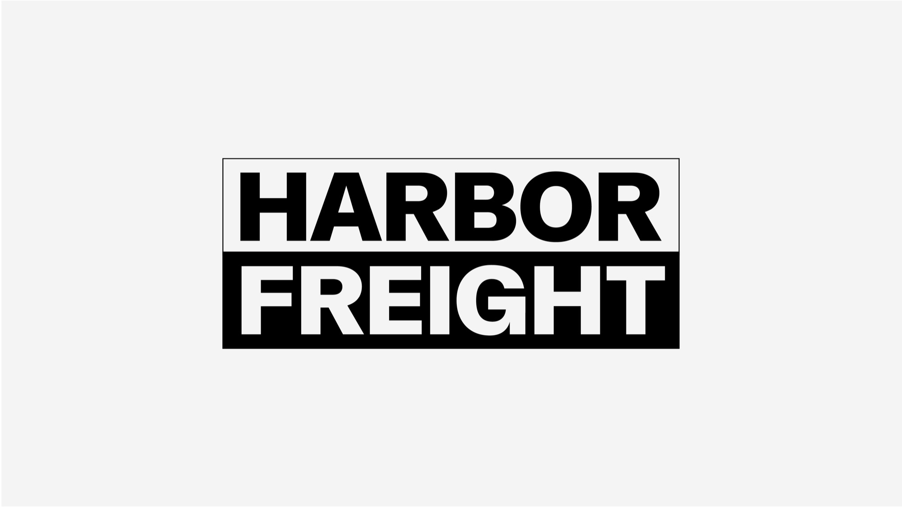
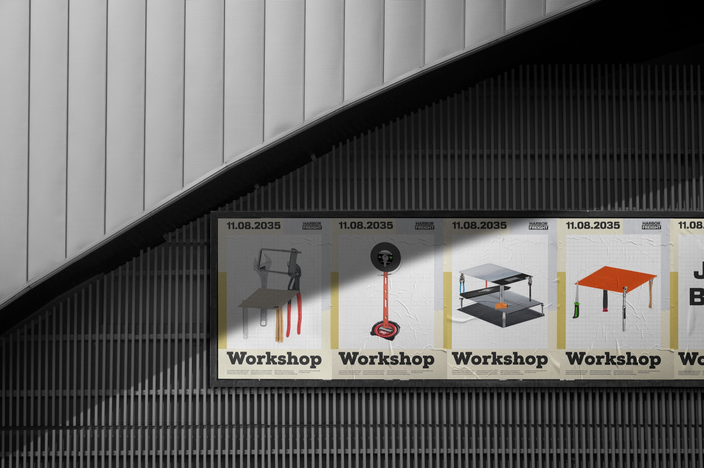
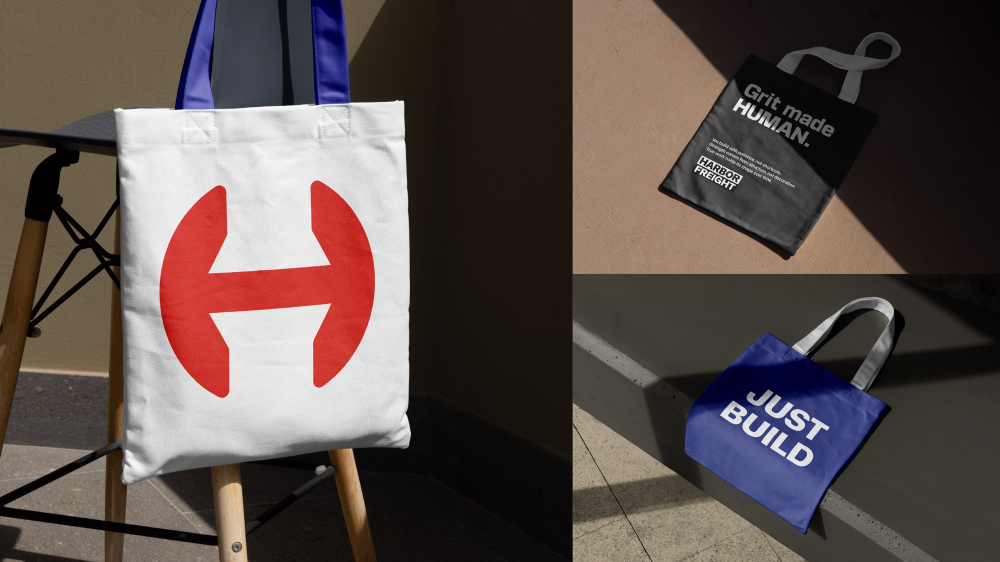
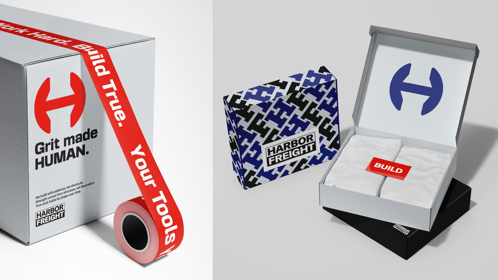
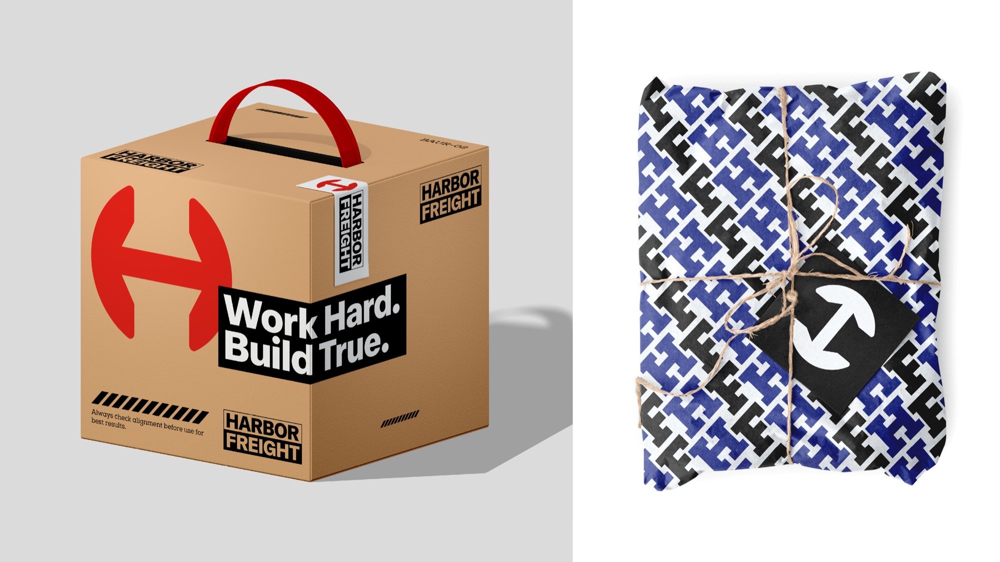
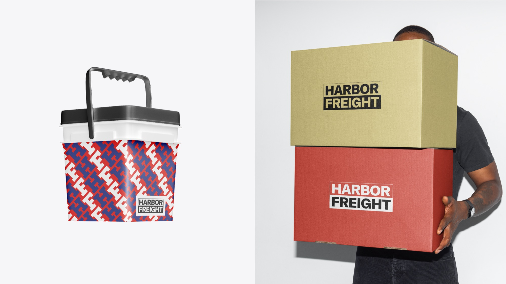
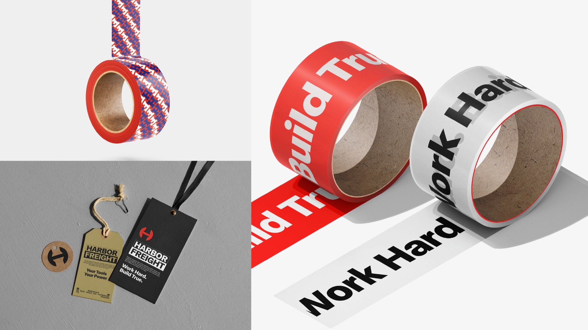
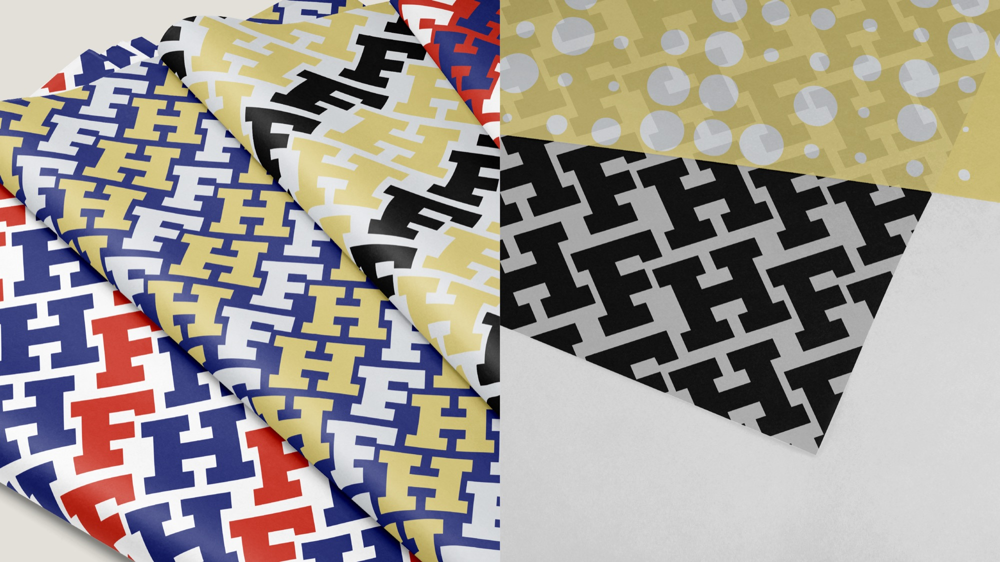
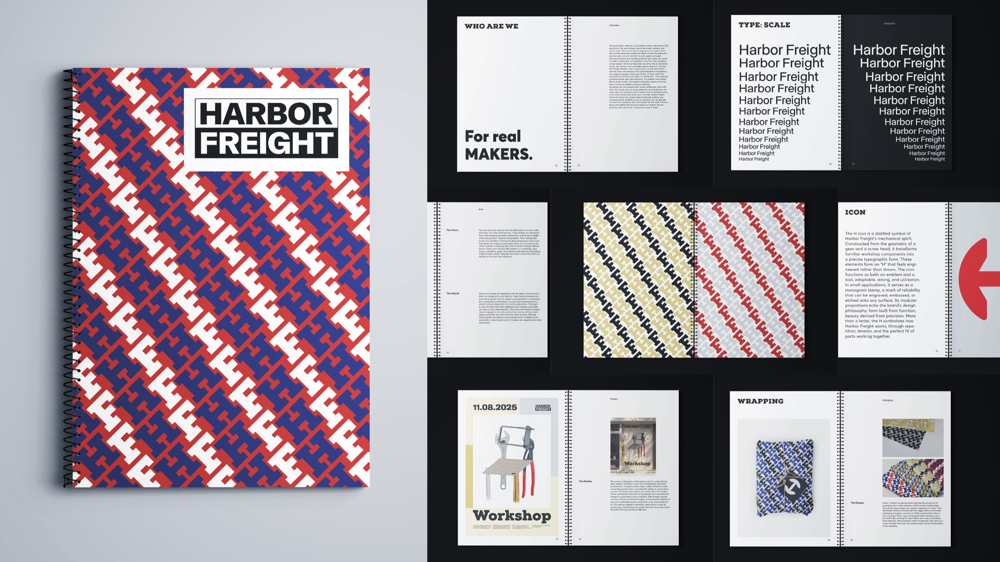
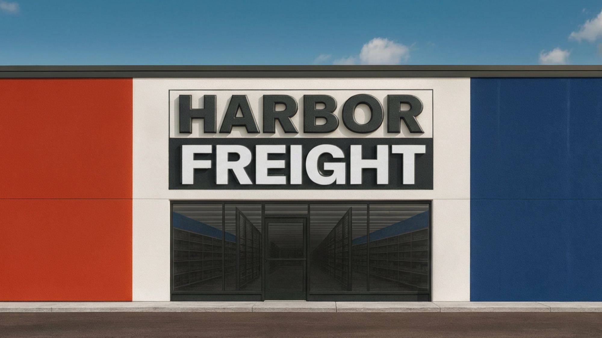
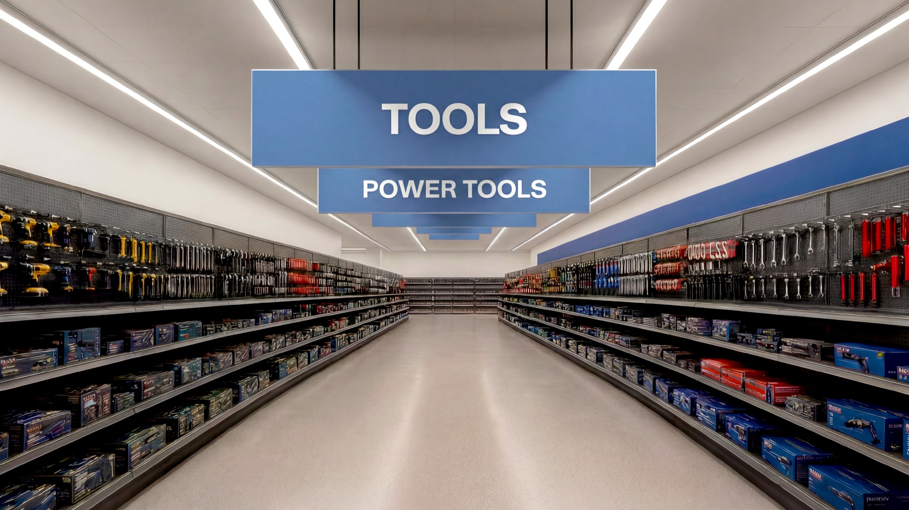
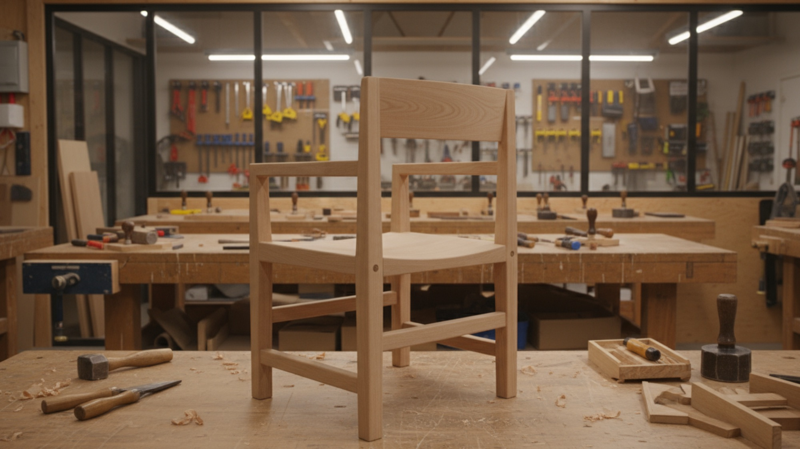
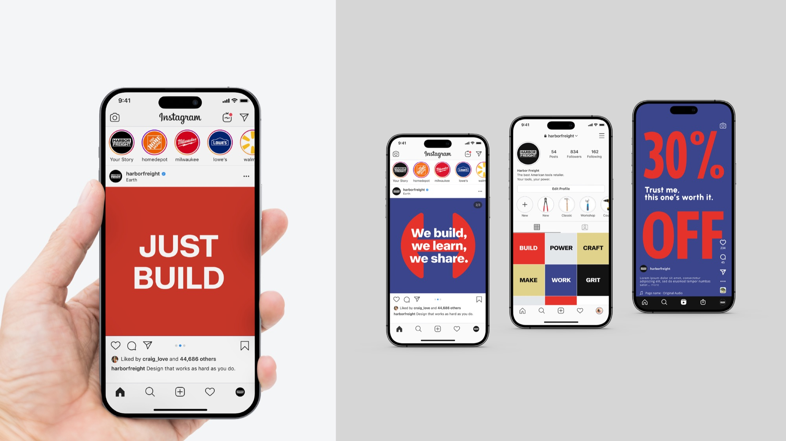
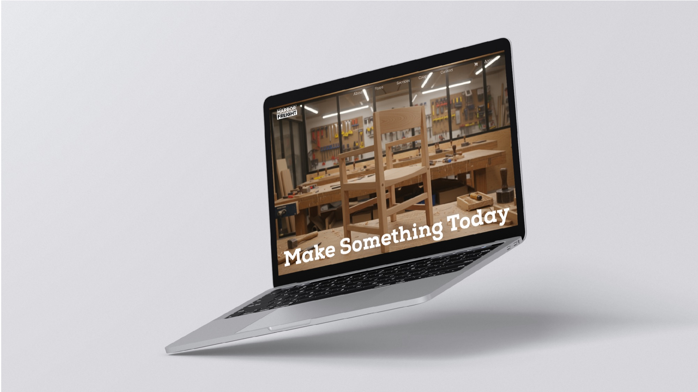
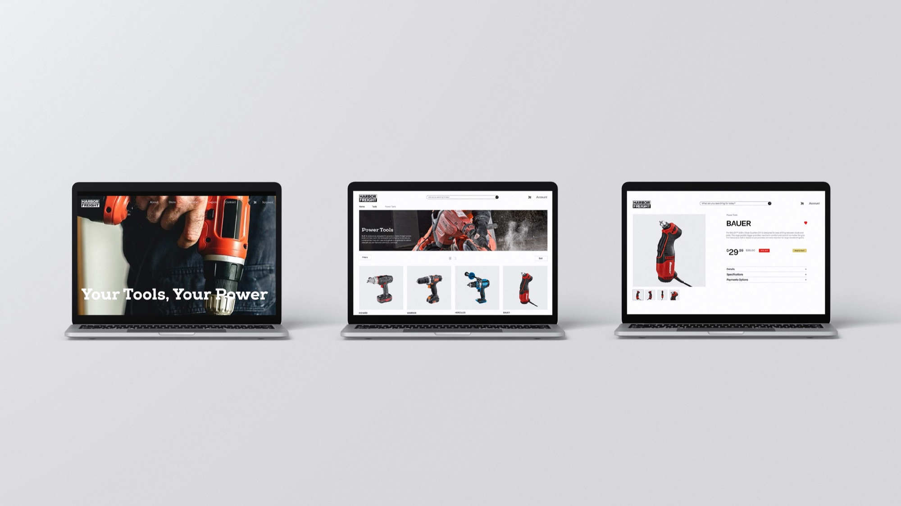